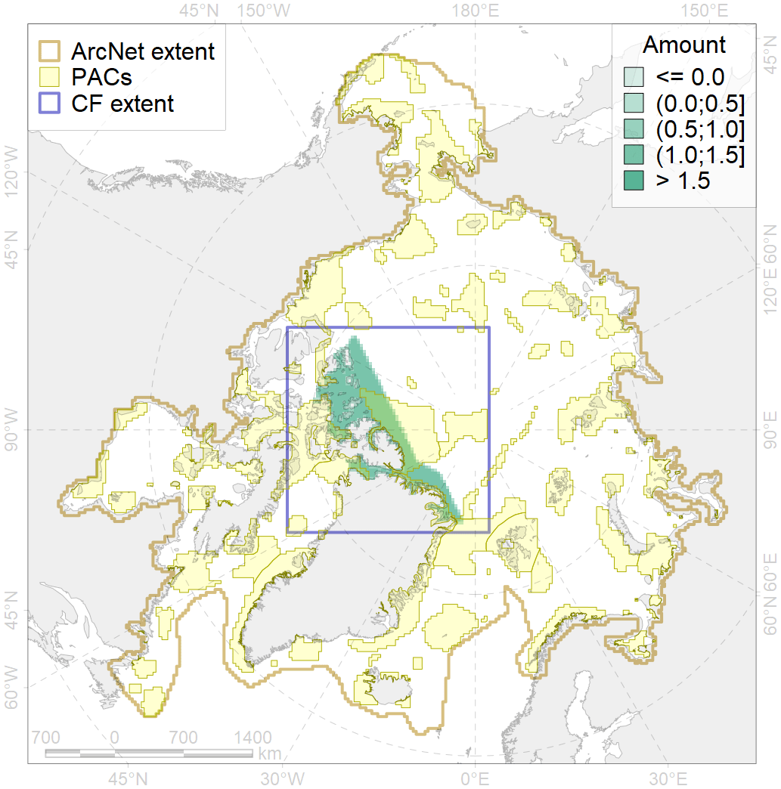
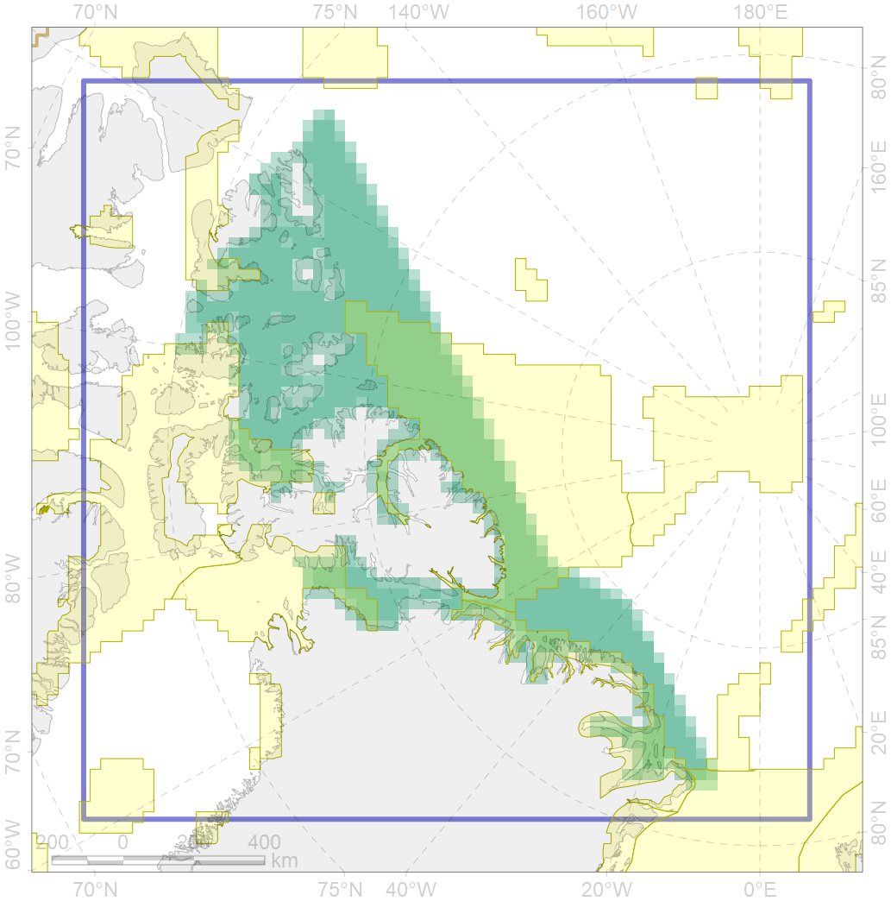

3051

| CF code | 3051 |
| CF name | Multiyear Ice distribution in September in the Northern Canadian Archipelago LME |
| Time Period | 1979 - 2017, adopted for recent changes |
| Source(s) | Lavielle M. 1999. Detection of multiple changes in a sequence of dependent variables. Stochastic Processes and their Applications, 83(1): 79–102. doi:10.1016/S0304-4149(99)00023-X. |
| Seasonality | September |
| Depth Horizon | Sea level (0m) |
| Methodology | Lavielle M. 1999. Detection of multiple changes in a sequence of dependent variables. Stochastic Processes and their Applications, 83(1): 79–102. doi:10.1016/S0304-4149(99)00023-X. |
| Use Restrictions | Joined terms of data licenses, copyrights, restrictions, terms of use, disclaimers, etc. No additional terms from data contributor. |
| Author Name | Nikita Platonov |
| Notes | |
| Scenario’s Target | 0.18 |
| Target Achievement | 0.373 (Scenario: 207.4%) |
| PAC | Share of the Total Amount within the PAC | Share of the Target Achievement for the ArcNet | PAC’s Contribution to the Target Achievement |
|---|---|---|---|
| 28 | 0.0%0.1% | 0.1%0.4% | 0.0%0.2% |
| 29 | 0.4%0.5% | 2.0%2.5% | 0.9%1.2% |
| 33 | 5.4%6.4% | 29.9%35.0% | 14.4%16.9% |
| 51 | 2.2%2.4% | 11.8%12.4% | 5.7%6.0% |
| 52 | 2.4%2.5% | 12.3%12.3% | 5.9%5.9% |
| 53 | 0.0%0.0% | 0.0%0.0% | 0.0%0.0% |
| 54 | 24.7%26.0% | 136.6%143.9% | 65.9%69.4% |
| 63 | 0.2%0.2% | 1.0%1.0% | 0.5%0.5% |
| inner | 35.4%38.0% | 193.6%207.8% | 93.4%100.2% |
| outer | 64.6%72.5% | 13.7%56.9% | 6.6%27.4% |
| † supplement values are for area consistence whereas principal values are for Accenter compatible gridded stats |